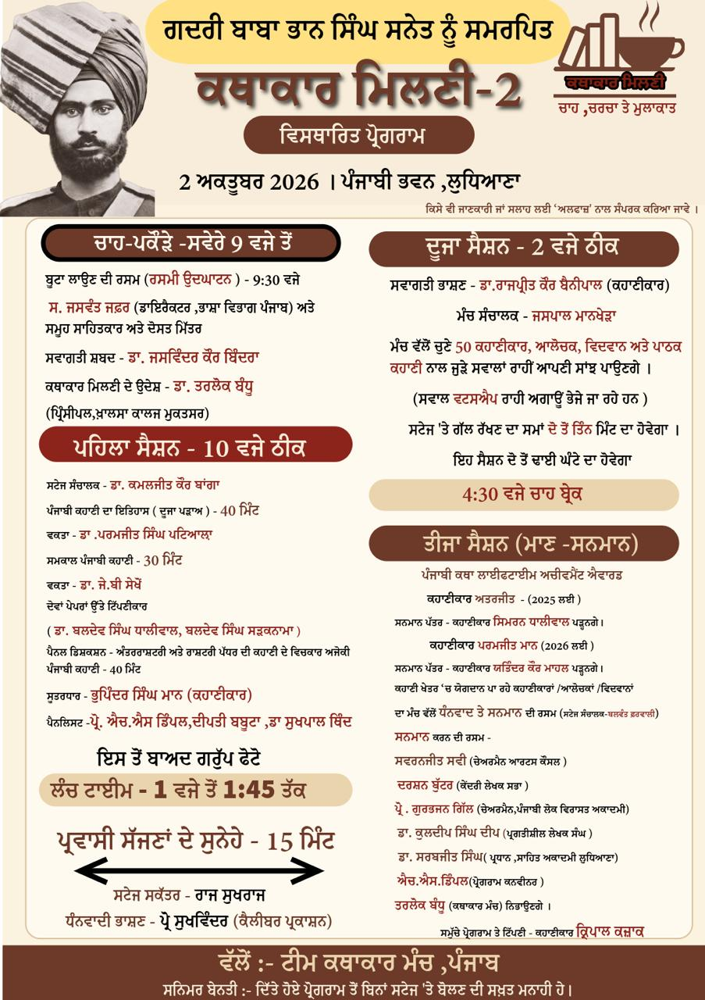
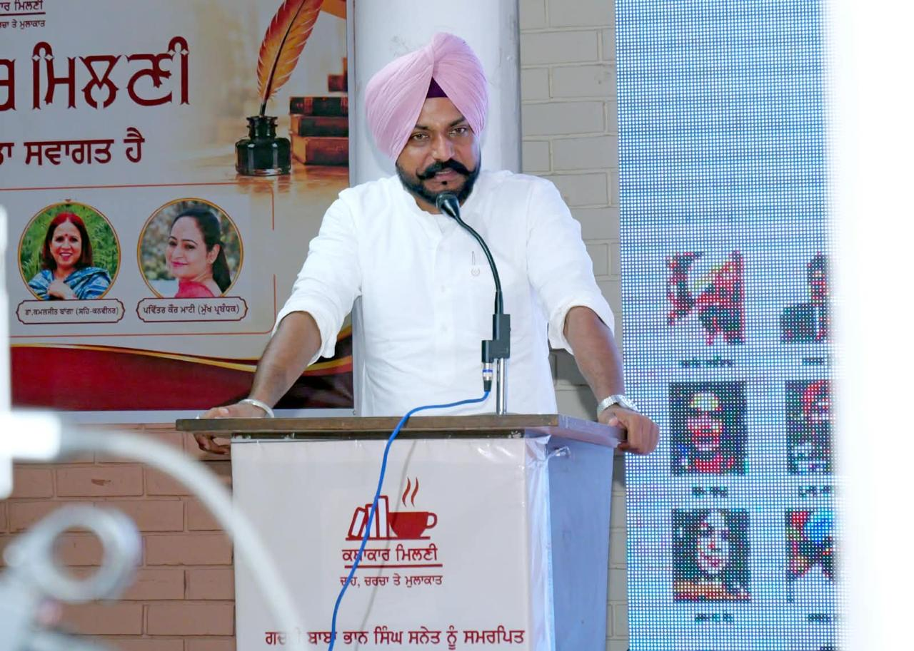
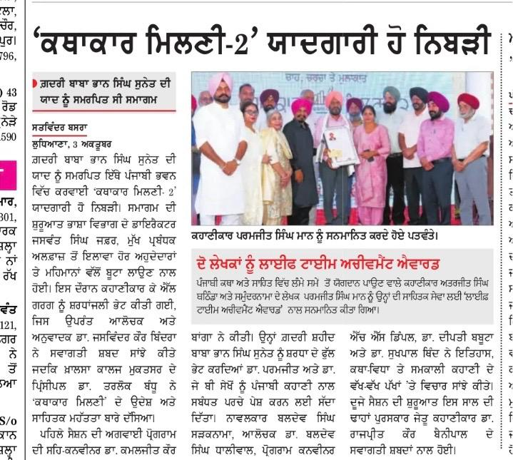

✨ ਕਥਾਕਾਰ ਮਿਲਣੀ–2
ਪੰਜਾਬੀ ਕਹਾਣੀਕਾਰਾਂ ਦੀ ਸਾਹਿਤਕ ਮਿਲਣੀ
ਮਿਤੀ
2 ਅਕਤੂਬਰ
ਸਮਾਂ
ਸਵੇਰੇ 9:30 ਵਜੇ
ਤੋਂ ਸ਼ਾਮ 5:00 ਵਜੇ ਤੱਕ
ਸਥਾਨ
ਪੰਜਾਬੀ ਭਵਨ
ਲੁਧਿਆਣਾ
ਕਥਾਕਾਰ ਮਿਲਣੀ–2 ਬਾਰੇ
ਕਥਾਕਾਰ ਮਿਲਣੀ–2 ਪੰਜਾਬੀ ਕਹਾਣੀਕਾਰਾਂ, ਲੇਖਕਾਂ ਅਤੇ ਸਾਹਿਤ ਪ੍ਰੇਮੀਆਂ ਨੂੰ ਇੱਕ ਸਾਂਝੇ ਸਾਹਿਤਕ ਮੰਚ ’ਤੇ ਇਕੱਠਾ ਕਰਨ ਦੀ ਇੱਕ ਪਹਿਲ ਵਜੋਂ ਰਿਕਾਰਡ ਕਾਇਮ ਕਰਨ ਵਿੱਚ ਸਫਲ ਰਹੀ ਹੈ ।
ਇਸ ਮਿਲਣੀ ਨੇ ਕਹਾਣੀ ਅਤੇ ਸਾਹਿਤ ਨਾਲ ਜੁੜੇ ਰਚਨਾਕਾਰਾਂ ਨੂੰ ਆਪਸ ਵਿੱਚ ਮਿਲਣ, ਵਿਚਾਰ ਸਾਂਝੇ ਕਰਨ ਅਤੇ ਸਾਹਿਤਕ ਸਾਂਝ ਨੂੰ ਹੋਰ ਮਜ਼ਬੂਤ ਕਰਨ ਦਾ ਮੌਕਾ ਪ੍ਰਦਾਨ ਕਰਨ ਦੇ ਨਾਲ ਨਾਲ ਟੁੱਟ ਰਹੇ ਸੰਵਾਦ ਨੂੰ ਜੋੜਿਆ ਤੇ ਨਵੀ ਪਿਰਤ ਪਾਈ ਹੈ । ਜਿਸਦਾ ਸਿਹਰਾ ਕਥਾਕਾਰ ਮੰਚ ਦੀ ਸਮੁੱਚੀ ਟੀਮ ਨੂੰ ਜਾਂਦਾ ਹੈ ।
📋 ਪ੍ਰੋਗਰਾਮ ਦਾ ਵਿਸਥਾਰ ਵੇਰਵਾ

ਅਲਫ਼ਾਜ਼ ਧੰਨਵਾਦੀ ਭਾਸ਼ਣ ਦੌਰਾਨ

ਪੰਜਾਬੀ ਟ੍ਰਿਬਿਊਨ ਦੀ ਕਵਰੇਜ਼

👥 ਮਿਲਣੀ ਵਿੱਚ 500 ਤੋਂ ਵੱਧ ਕਹਾਣੀਕਾਰ ,ਆਲੋਚਕ ,ਵਿਦਵਾਨ ,ਪਾਠਕ ਅਤੇ ਪਬਲਿਸ਼ਰ ਸ਼ਾਮਿਲ ਹੋਏ ।6000 ਤੋਂ ਵੱਧ ਲੋਕਾਂ ਨੇ ਲਾਇਵ ਵੇਖਿਆ ਜੋ ਸਾਹਿਤ ਜਗਤ ਲਈ ਹੈਰਾਨੀ ਭਰੀ ਖ਼ਬਰ ਵਜੋ ਉੱਭਰਿਆ ਹੈ
ਗ਼ਦਰੀ ਬਾਬਾ ਭਾਨ ਸਿੰਘ ਸੁਨੇਤ ਦੀ ਯਾਦ ਨੂੰ ਸਮਰਪਿਤ ‘ਕਥਾਕਾਰ ਮਿਲਣੀ-2’ ਨੇ ਸਿਰਜਿਆ ਸਾਹਿਤਕ ਸੰਵਾਦ ਦਾ ਨਵਾਂ ਅਧਿਆਇ
ਲੁਧਿਆਣਾ, 2 ਅਕਤੂਬਰ 2026: ਬੀਤੇ ਦਿਨੀਂ ਪੰਜਾਬੀ ਭਵਨ, ਲੁਧਿਆਣਾ ਵਿਖੇ ਕਰਵਾਈ ਗਈ ਗ਼ਦਰੀ ਬਾਬਾ ਭਾਨ ਸਿੰਘ ਸੁਨੇਤ ਦੀ ਯਾਦ ਨੂੰ ਸਮਰਪਿਤ ‘ਕਥਾਕਾਰ ਮਿਲਣੀ-2’ ਯਾਦਗਾਰੀ ਹੋ ਨਿੱਬੜੀ। ਪੰਜਾਬ ਪੱਧਰੀ ਇਸ ਸਾਹਿਤਕ ਸਮਾਗਮ ਦਾ ਮਕਸਦ ਪੰਜਾਬੀ ਦੇ ਕਥਾਕਾਰਾਂ, ਆਲੋਚਕਾਂ, ਵਿਦਵਾਨਾਂ ਅਤੇ ਪਾਠਕਾਂ ਨੂੰ ਇੱਕ ਮੰਚ ’ਤੇ ਇਕੱਠਾ ਕਰਕੇ ਪੰਜਾਬੀ ਕਹਾਣੀ ਦੀ ਪਰੰਪਰਾ, ਸਮਕਾਲੀ ਸਰੋਕਾਰਾਂ ਅਤੇ ਨਵੇਂ ਪਸਾਰਿਆਂ ਬਾਰੇ ਸਾਰਥਕ ਸੰਵਾਦ ਸਿਰਜਣਾ ਸੀ। ਸਮਾਗਮ ਦੀ ਸ਼ੁਰੂਆਤ ਜਸਵੰਤ ਸਿੰਘ ਜਫ਼ਰ (ਡਾਇਰੈਕਟਰ ਭਾਸ਼ਾ ਵਿਭਾਗ ) , ਮੁੱਖ ਪ੍ਰਬੰਧਕ ਕਹਾਣੀਕਾਰ ਅਲਫ਼ਾਜ਼ ਦੇ ਨਾਲ ਹੋਰ ਅਹੁਦੇਦਾਰਾਂ ਅਤੇ ਮਹਿਮਾਨਾਂ ਵੱਲੋਂ ਸਾਂਝੇ ਤੌਰ ’ਤੇ ਬੂਟਾ ਲਗਾਉਣ ਦੀ ਰਸਮ ਨਾਲ ਹੋਈ। ਬੀਤੇ ਦਿਨ ਸਵਰਗ ਸਿਧਾਰ ਗਏ ਪ੍ਰਸਿੱਧ ਕਹਾਣੀਕਾਰ ਅਤੇ ਵਿਅੰਗਕਾਰ ਕੇ.ਐਲ.ਗਰਗ ਨੂੰ ਸ਼ਰਧਾਂਜਲੀ ਦੇਣ ਉਪਰੰਤ ਪ੍ਰਸਿੱਧ ਆਲੋਚਕ ਅਤੇ ਅਨੁਵਾਦਿਕ ਡਾ. ਜਸਵਿੰਦਰ ਕੌਰ ਬਿੰਦਰਾ ਨੇ ਸਵਾਗਤੀ ਸ਼ਬਦ ਸਾਂਝੇ ਕੀਤੇ। ਖ਼ਾਲਸਾ ਕਾਲਜ ਮੁਕਤਸਰ ਦੇ ਪ੍ਰਿੰਸੀਪਲ ਡਾ. ਤਰਲੋਕ ਬੰਧੂ ਨੇ ‘ਕਥਾਕਾਰ ਮਿਲਣੀ’ ਦੇ ਉਦੇਸ਼ ਅਤੇ ਸਾਹਿਤਕ ਮਹੱਤਤਾ ਬਾਰੇ ਵਿਚਾਰ ਪ੍ਰਗਟ ਕਰਦਿਆਂ ਕਿਹਾ ਕਿ ਇਸ ਕਥਾਕਾਰ ਮਿਲਣੀ ਦਾ ਮਕਸਦ ਰੁਕ ਚੁੱਕੇ ਸੰਵਾਦ ਨੂੰ ਅੱਗੇ ਤੋਰਨਾ ਹੈ। ਪਹਿਲੇ ਸੈਸ਼ਨ ਦਾ ਸੰਚਾਲਨ ਪ੍ਰੋਗਰਾਮ ਦੇ ਸਹਿ-ਕਨਵੀਨਰ ਡਾ. ਕਮਲਜੀਤ ਕੌਰ ਬਾਂਗਾ ਨੇ ਕੀਤਾ। ਉਨ੍ਹਾਂ ਨੇ ਗ਼ਦਰੀ ਸ਼ਹੀਦ ਬਾਬਾ ਭਾਨ ਸਿੰਘ ਸੁਨੇਤ ਨੂੰ ਸ਼ਰਧਾ ਦੇ ਫੁੱਲ ਭੇਟ ਕਰਦਿਆਂ ਡਾ. ਪਰਮਜੀਤ ਅਤੇ ਡਾ. ਜੇ. ਬੀ. ਸੇਖੋਂ ਨੂੰ ਪੰਜਾਬੀ ਕਹਾਣੀ ਨਾਲ ਸਬੰਧਿਤ ਆਪਣੇ ਪਰਚੇ ਪੇਸ਼ ਕਰਨ ਲਈ ਸੱਦਾ ਦਿੱਤਾ। ਡਾ. ਪਰਮਜੀਤ ਪਟਿਆਲਾ ਨੇ ਕਹਾਣੀ ਦੇ ਦੂਜੇ ਪੜਾਅ ਬਾਰੇ ਚਰਚਾ ਕੀਤੀ ਅਤੇ ਪੰਜਾਬੀ ਸਾਹਿਤ ਵਿੱਚੋਂ ਦੂਜੇ ਪੜਾਅ ਦੇ ਕਹਾਣੀਕਾਰਾਂ ਦੀਆਂ ਮਿਸਾਲਾਂ ਦੇ ਕੇ ਆਪਣੀ ਗੱਲ ਮੁਕੰਮਲ ਕੀਤੀ।ਦੂਜੇ ਪਰਚਾ ਲੇਖਕ ਜੇ ਬੀ ਸੇਖੋਂ ਨੇ ਸਮਕਾਲੀ ਪੰਜਾਬੀ ਕਹਾਣੀ ਵਿਚ ਸਮਾਜਿਕ ਤਬਦੀਲੀ ਨਾਲ ਆ ਰਹੇ ਬਦਲਾਅ ਦਾ ਬਿਰਤਾਂਤ ਸਰੋਤਿਆਂ ਦੇ ਰੂਬਰੂ ਰੱਖਿਆ। ਇਸ ਮੌਕੇ ਨਾਵਲਕਾਰ ਬਲਦੇਵ ਸਿੰਘ ਸੜਕਨਾਮਾ , ਡਾ. ਬਲਦੇਵ ਸਿੰਘ ਧਾਲੀਵਾਲ ਨੇ ਪੜ੍ਹੇ ਗਏ ਪਰਚਿਆਂ ਦੀ ਰੋਸ਼ਨੀ ਵਿੱਚ ਪੰਜਾਬੀ ਕਹਾਣੀ ਦੇ ਸਫ਼ਰ ਬਾਰੇ ਵਿਚਾਰ ਸਾਂਝੇ ਕੀਤੇ।
ਦੂਜੇ ਸੈਸ਼ਨ ਦੇ ਸੂਤਰਧਾਰ ਕਹਾਣੀਕਾਰ ਭੁਪਿੰਦਰ ਮਾਨ ਸਨ।ਪੈਨਲ ਡਿਸਕਸ਼ਨ ਵਿੱਚ ਐਚ. ਐਸ. ਡਿੰਪਲ,ਦੀਪਤੀ ਬਬੂਟਾ ਅਤੇ ਡਾ. ਸੁਖਪਾਲ ਥਿੰਦ ਨੇ ਇਤਿਹਾਸ, ਕਥਾ-ਵਿਧਾ ਅਤੇ ਸਮਕਾਲੀ ਕਹਾਣੀ ਦੇ ਵੱਖ-ਵੱਖ ਪੱਖਾਂ ’ਤੇ ਵਿਚਾਰ ਪ੍ਰਗਟ ਕੀਤੇ ਅਤੇ ਰਾਸ਼ਟਰੀ ਅਤੇ ਅੰਤਰਰਾਸ਼ਟਰੀ ਕਹਾਣੀ ਦੇ ਪ੍ਰਸੰਗ ਵਿੱਚ ਕਥਾ ਦੀਆਂ ਵੱਖ-ਵੱਖ ਪਰਤਾਂ ਨੂੰ ਸੰਵਾਦ ਰਾਹੀਂ ਸਮਝਣ ਦਾ ਯਤਨ ਕੀਤਾ।ਦੂਜੇ ਸੈਸ਼ਨ ਦੀ ਸ਼ੁਰੂਆਤ ਇਸ ਸਾਲ ਦੇ ਢਾਹਾਂ ਪੁਰਸਕਾਰ ਜੇਤੂ ਕਹਾਣੀਕਾਰ ਡਾ. ਰਾਜਪ੍ਰੀਤ ਕੌਰ ਬੈਨੀਪਾਲ ਦੇ ਸਵਾਗਤੀ ਸ਼ਬਦਾਂ ਨਾਲ ਹੋਈ। ਜਸਪਾਲ ਮਾਨਖੇੜਾ ਨੇ ਮੰਚ ਸੰਚਾਲਨ ਕਰਦਿਆਂ ਕਹਾਣੀ ਨਾਲ ਜੁੜੇ ਸਵਾਲਾਂ ਅਤੇ ਸਰੋਤਿਆਂ ਦੀਆਂ ਜਿਗਿਆਸਾਵਾਂ ਨੂੰ ਸੰਵਾਦ ਦੇ ਰੂਪ ਵਿੱਚ ਅੱਗੇ ਤੋਰਿਆ। ਪੰਦਰਾਂ ਦੇ ਕਰੀਬ ਕਹਾਣੀਕਾਰਾਂ ਨੇ ਉਨ੍ਹਾਂ ਨੂੰ ਪਹਿਲਾਂ ਹੀ ਭੇਜੇ ਗਏ ਸਵਾਲਾਂ ਦਾ ਸੰਖੇਪ ਸੰਵਾਦ ਸਰੋਤਿਆਂ ਨਾਲ ਸਾਂਝਾ ਕੀਤਾ। ਖ਼ਾਲਿਦ ਹੁਸੈਨ, ਭਗਵੰਤ ਰਸੂਲਪੁਰੀ, ਦਰਸ਼ਨ ਜੋਗਾ, ਬਲਵਿੰਦਰ ਗਰੇਵਾਲ, ਅਜਮੇਰ ਸਿੱਧੂ,ਨਿਰੰਜਣ ਬੋਹਾ, ਕੁਲਦੀਪ ਸਿੰਘ ਬੇਦੀ,ਰੇਮਨ, ਬਲਵੀਰ ਕੌਰ ਰੀਹਲ,ਡਾ.ਸੰਦੀਪ ਰਾਣਾ, ਰਣਜੀਤ ਗੌਰਵ, ਸੁਰਿੰਦਰ ਨੀਰ, ਸਰੂਪ ਸਿਆਲਵੀ, ਬਲਜੀਤ ਰੈਣਾ, ਜਗਤਾਰ ਸ਼ੇਰਗਿੱਲ, ਪ੍ਰਿਤਪਾਲ ਕੌਰ ਚਾਹਲ, ਮੁਖਤਿਆਰ ਸਿੰਘ ਨੇ ਅਗਾਊਂ ਭੇਜੇ ਹੋਏ ਸਵਾਲਾਂ ਦੇ ਭਾਵਪੂਰਤ ਜਵਾਬ ਦਿੱਤੇ।ਇਸ ਕਥਾ ਮਿਲਣੀ ਵਿੱਚ ਜਤਿੰਦਰ ਹਾਂਸ,ਸਾਂਵਲ ਧਾਮੀ, ਜਸਵੀਰ ਰਾਣਾ, ਕੁਲਵੰਤ ਗਿੱਲ,ਪਰਗਟ ਸਤੌਜ,ਅਨੇਮਨ, ਜਗਵਿੰਦਰ ਜੋਧਾ, ਬਿੰਦਰ ਬਸਰਾ, ਸੁਰਿੰਦਰ ਉਬਰਾਏ,ਕਮਲ ਸੇਖੋਂ, ਮਨਦੀਪ ਰਿੰਪੀ, ਜਸਵਿੰਦਰ ਧਰਮਕੋਟ,ਅਗਾਜਬੀਰ ਕਹਾਣੀਕਾਰ ਨੇ ਵੀ ਹਾਜ਼ਰੀ ਲਵਾਈ। ਚਰਚਾ ਦੌਰਾਨ ਕਹਾਣੀ ਦੀ ਬਦਲ ਰਹੀ ਪ੍ਰਕਿਰਤੀ, ਮੌਜੂਦਾ ਚੁਣੌਤੀਆਂ ਅਤੇ ਭਵਿੱਖੀ ਸੰਭਾਵਨਾਵਾਂ ’ਤੇ ਗੰਭੀਰ ਵਿਚਾਰ-ਵਟਾਂਦਰਾ ਹੋਇਆ। ਨਵੀਂ ਪੀੜ੍ਹੀ ਦੇ ਕਥਾਕਾਰਾਂ ਅਤੇ ਸਥਾਪਤ ਸਾਹਿਤਕਾਰਾਂ ਵਿਚਕਾਰ ਹੋਇਆ ਸਿੱਧਾ ਸੰਵਾਦ ਸਮਾਗਮ ਦਾ ਵਿਸ਼ੇਸ਼ ਆਕਰਸ਼ਣ ਰਿਹਾ।
ਪੰਜਾਬੀ ਕਥਾ ਅਤੇ ਸਾਹਿਤ ਵਿੱਚ ਲੰਮੇ ਸਮੇਂ ਤੋਂ ਯੋਗਦਾਨ ਪਾਉਣ ਵਾਲੇ ਪ੍ਰਸਿੱਧ ਕਹਾਣੀਕਾਰ ਅਤਰਜੀਤ ਬਠਿੰਡਾ ਅਤੇ ਸਮੁੰਦਰਨਾਮਾ ਫੇਮ ਪਰਮਜੀਤ ਸਿੰਘ ਮਾਨ ਨੂੰ ਉਨ੍ਹਾਂ ਦੀ ਸਾਹਿਤਕ ਸੇਵਾ ਲਈ ਲਾਈਫ ਟਾਈਮ ਅਚੀਵਮੈਂਟ ਐਵਾਰਡ ਨਾਲ ਸਨਮਾਨਿਤ ਕੀਤਾ ਗਿਆ। ਵਿਦੇਸ਼ੀ ਸਾਹਿਤਕਾਰਾਂ ਵੱਲੋਂ ਲਾਇਵ ਹਾਜ਼ਰੀ ਨਾਲ ਸੁਨੇਹੇ ਭੇਜ ਕੇ ਸੰਵਾਦ ਰਚਣਾ ਅਨੋਖੀ ਪਿਰਤ ਰਿਹਾ ।
‘ਕਥਾਕਾਰ ਮਿਲਣੀ’ ਦੇ ਮੁੱਖ ਆਯੋਜਕ ਅਤੇ ਪ੍ਰਸਿੱਧ ਕਹਾਣੀਕਾਰ ਅਲਫ਼ਾਜ਼ ਨੇ ਕਿਹਾ ਕਿ ਇਸ ਉਪਰਾਲੇ ਦਾ ਮਕਸਦ ਪੰਜਾਬੀ ਕਹਾਣੀ ਦੀ ਅਮੀਰ ਵਿਰਾਸਤ ਨੂੰ ਵਰਤਮਾਨ ਕਥਾ-ਸਿਰਜਣਾ ਨਾਲ ਜੋੜਦਿਆਂ ਕਥਾਕਾਰ ਅਤੇ ਪਾਠਕ ਦਰਮਿਆਨ ਜੀਵੰਤ ਸਾਹਿਤਕ ਸੰਵਾਦ ਨੂੰ ਮਜ਼ਬੂਤ ਕਰਨਾ ਹੈ। ਉਨ੍ਹਾਂ ਕਿਹਾ ਕਿ ‘ਕਥਾਕਾਰ ਮਿਲਣੀ-2’ ਨੇ ਇਸ ਸਾਹਿਤਕ ਉਪਰਾਲੇ ਨੂੰ ਨਵਾਂ ਵਿਸਥਾਰ ਦਿੰਦਿਆਂ ਪੰਜਾਬੀ ਕਥਾ ਦੇ ਸੰਵਾਦ ਲਈ ਇੱਕ ਸਾਰਥਕ ਮੰਚ ਵਜੋਂ ਆਪਣੀ ਪਛਾਣ ਹੋਰ ਮਜ਼ਬੂਤ ਕੀਤੀ ਹੈ। ਇਸ ਮੌਕੇ ਮੰਚ ਦੇ ਬਾਕੀ ਅਹੁਦੇਦਾਰਾਂ ਨੇ ਆਪ ਮੁਹਾਰੇ ਹੋਏ ਭਰਵੇਂ ਇੱਕਠ ‘ਤੇ ਤਸੱਲੀ ਪ੍ਰਗਟ ਕਰਦਿਆਂ ਕਿਹਾ ਕਿ ਇਹ ਸਮਾਗਮ ਪਾਠਕ- ਲੇਖਕ ਨੂੰ ਹੋਰ ਮਜ਼ਬੂਤੀ ਪ੍ਰਦਾਨ ਕਰੇਗਾ ਤੇ ਇਸ ਸਮਾਗਮ ਦੀ ਗੂੰਜ ਦੇਰ ਤੱਕ ਪੈਂਦੀ ਰਹੇਗੀ । ਅੰਤ ਮੌਕੇ ਕਹਾਣੀ ਅਤੇ ਸਾਹਿਤ ਦੇ ਖੇਤਰ ਨਾਲ ਜੁੜੀ ਹਰ ਸ਼ਖ਼ਸੀਅਤ ਨੂੰ ਮੰਚ ਵੱਲੋਂ ਸਨਮਾਨ ਕੀਤਾ ਗਿਆ ।ਇਸ ਮੌਕੇ ਗੁਰੂ ਕਾ ਅਤੁੱਟ ਲੰਗਰ ,ਨਾਮਧਾਰੀ ਟਰੱਸਟ ਭੈਣੀ ਸਾਹਿਬ ਵੱਲੋਂ ਚਲਾਇਆ ਗਿਆ । ਕਥਾਕਾਰ ਮੰਚ ਦੇ ਬਾਕੀ ਅਹੁਦੇਦਾਰ ਕਹਾਣੀਕਾਰ ਬਲਵੰਤ ਫਰਵਾਲੀ ,ਸੁਖਵਿੰਦਰ ਕੈਲੀਬਰ ਪ੍ਰਕਾਸ਼ਨ ਪਟਿਆਲ਼ਾ ,ਆਗਾਜ਼ਬੀਰ ,ਰਾਜ ਸੁਖਰਾਜ , ਲਖਵਿੰਦਰ ਵਿਰਕ ,ਪਵਿੱਤਰ ਕੌਰ ਮਾਟੀ ,ਸਤਵੀਰ ਕੌਰ ਸੱਗੂ,ਤਰਲੋਕ ਬੰਧੂ ,ਗੁਰਮਾਨ ਸੈਣੀ ਨੇ ਸਭ ਦਾ ਧੰਨਵਾਦ ਕਰਦਿਆਂ ਅਗਲੇ ਸਾਲ ਮਿਲਣ ਦਾ ਵਾਅਦਾ ਕਰਿਆ ।
📝 ਕਥਾਕਾਰ ਮਿਲਣੀ–2 ਲਈ ਰਜਿਸਟ੍ਰੇਸ਼ਨ
ਰਜਿਸਟ੍ਰੇਸ਼ਨ ਪੋਰਟਲ ਬੰਦ ਹੋ ਚੁੱਕਾ ਹੈ
📝 ਰਜਿਸਟ੍ਰੇਸ਼ਨ ਫਾਰਮ ਭਰੋ →📱 ਕਥਾਕਾਰ ਮੰਚ ਨਾਲ ਜੁੜੋ
ਕਥਾਕਾਰ ਮੰਚ ਦੇ WhatsApp Group ਨਾਲ ਜੁੜਨ ਲਈ ਹੇਠਾਂ ਦਿੱਤੇ Link ’ਤੇ click ਕਰੋ ਜਾਂ QR Code scan ਕਰੋ।
💬 WhatsApp Group ਨਾਲ ਜੁੜੋ →📷 QR Code scan ਕਰਕੇ ਸਿੱਧੇ Group ਨਾਲ ਜੁੜੋ।
📖 ਕਥਾਕਾਰ ਮੰਚ
ਕਥਾਕਾਰ ਮੰਚ ਦਾ ਮਕਸਦ ਪੰਜਾਬੀ ਸਾਹਿਤ ਦੀ ਬਿਹਤਰੀ ਲਈ ਨਵੇਂ ਅਤੇ ਪੁਰਾਣੇ ਲੇਖਕਾਂ ਨੂੰ ਇੱਕ ਸਾਂਝੇ ਮੰਚ ’ਤੇ ਇਕੱਠਾ ਕਰਨਾ ਹੈ।
ਇਹ ਮੰਚ ਆਪਸੀ ਸੰਵਾਦ, ਸਹਿਯੋਗ ਅਤੇ ਸਾਹਿਤਕ ਸਾਂਝ ਨੂੰ ਹੋਰ ਮਜ਼ਬੂਤ ਕਰਨ ਵੱਲ ਇੱਕ ਯਤਨ ਹੈ।
ਇਸ ਯਤਨ ਨੂੰ ਅੱਗੇ ਵਧਾਉਣ ਲਈ ਤੁਹਾਡਾ ਸਾਥ ਅਤੇ ਸਹਿਯੋਗ ਬੇਹੱਦ ਜ਼ਰੂਰੀ ਹੈ।